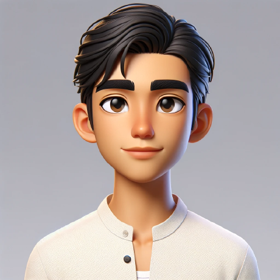

Backend Engineer
Software developer with over 10 years of experience building modern, robust, and scalable applications. My focus is on backend engineering, API design, system performance, and cloud-native solutions.
Portfolio